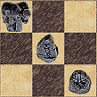

ThudBoard index | about ThudBoard | ThudBoard how-to | download
ThudBoard - The Discworld Boardgame Board
ThudBoard info
 ThudBoard is a computer application[1] that can be used to play Thud
battles without using the actual board.
ThudBoard is a computer application[1] that can be used to play Thud
battles without using the actual board.
If you don't have a clue what this Thud thing is, take a look at the official Thud site at http://www.thudgame.com. If that's too far away, a little bit more information is available at the about ThudBoard page.
The main purpose of ThudBoard is to facilitate online gaming, where people communicate moves by sending each other board-coordinates. Using the ThudBoard these moves can be carried out, and whole battles can be saved either as a series of moves or as a board position.
Another feature is the fact that multiple battles can be stored, so you can play many games simultaneously without the onerous task of remembering where each individual piece was in this battle you have been playing with your cousin in XXXX over the last few years.
The latest version can be found at the ThudBoard site.
A Czech version can be found at the Czech ThudBoard site.
The translation of the Czech version of ThudBoard and the docs is done by 'churchyard'. Thanks churchyard!
A Dutch version can be found at the Dutch ThudBoard site.
[1] ThudBoard is known to work on Windows, Linux, FreeBSD, OpenBSD and Mac OS X.
Screenshot

(click to see a full preview)
{kind=link}